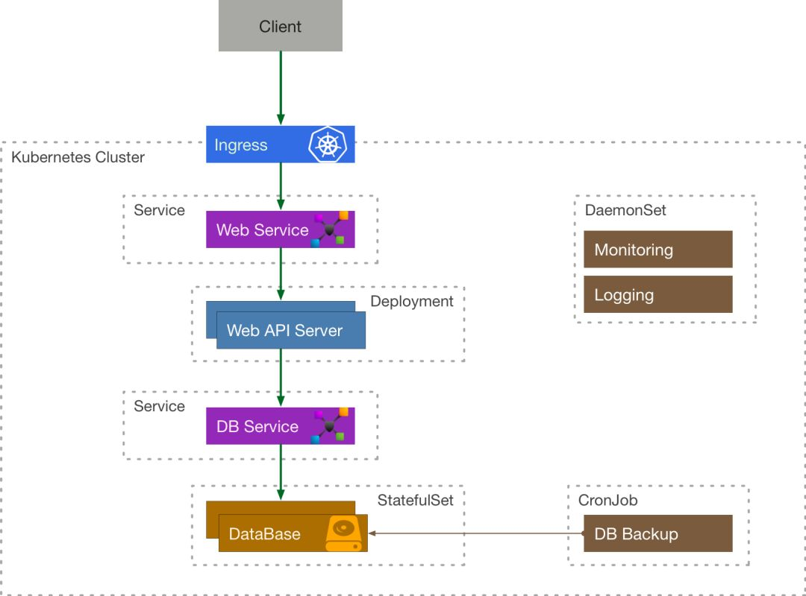
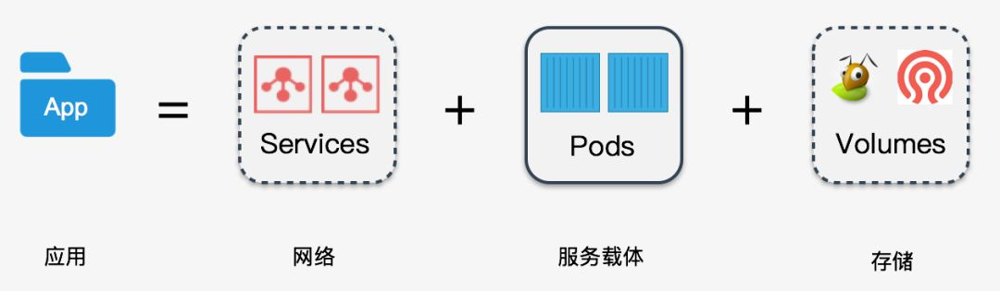
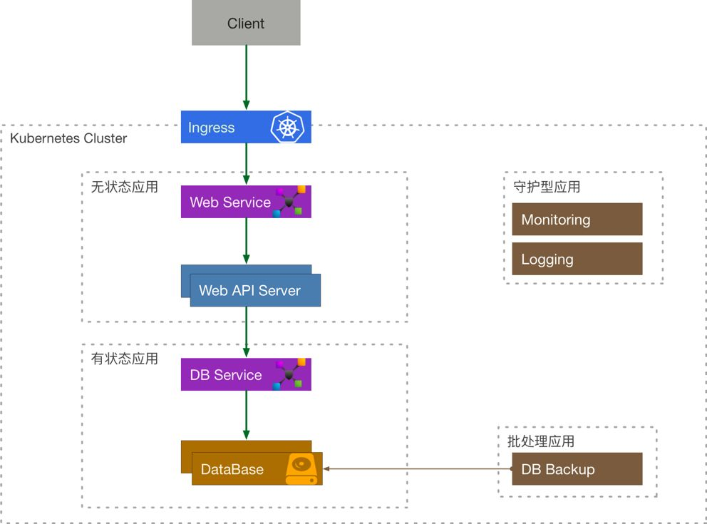
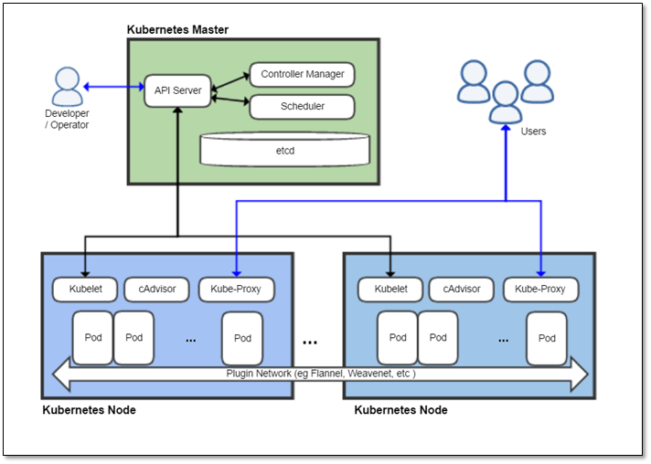
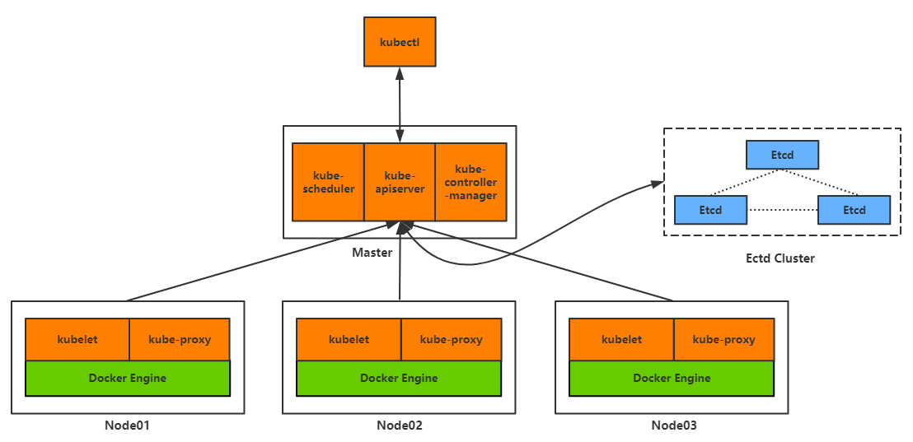
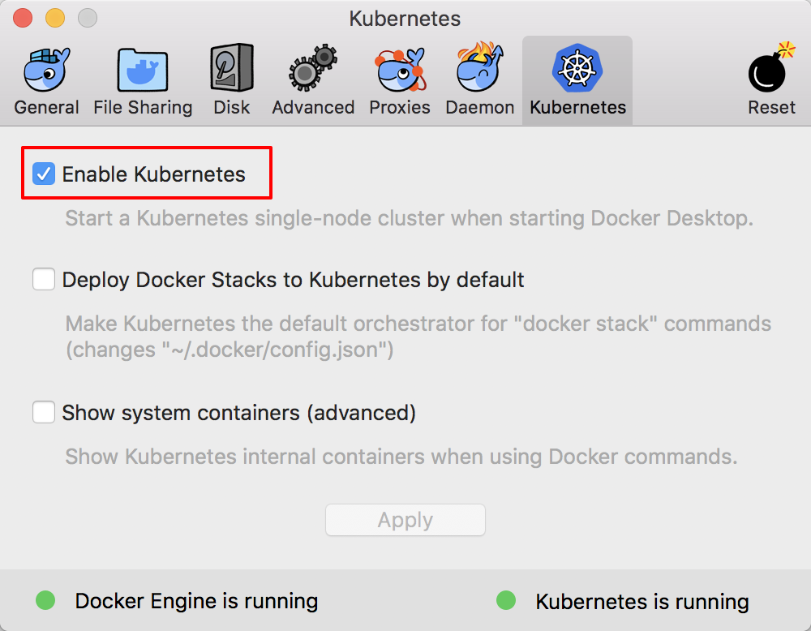
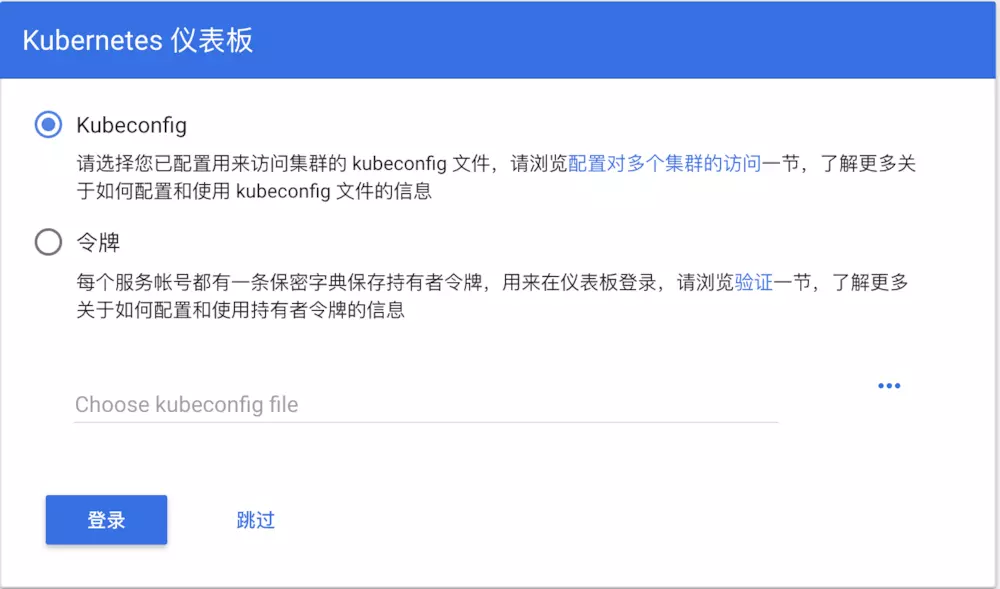
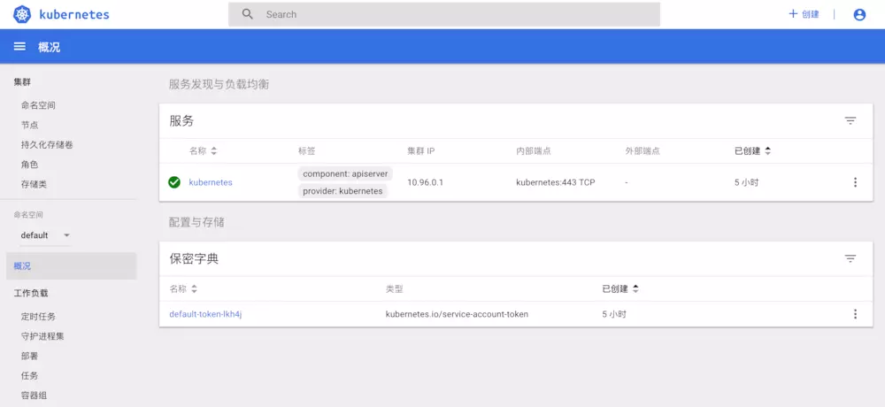

k8s集群的简单安装和使用
什么是kubernetes
Kubernetes 提供了很多的功能，它可以简化应用程序的工作流，加快开发速度。通常，一个成功的应用编排系统需要有较强的自动化能力，这也是为什么 Kubernetes 被设计作为构建组件和工具的生态系统平台，以便更轻松地部署、扩展和管理应用程序(Kubernetes 是一个容器编排平台)。
在传统的单体式架构的应用中，我们开发、测试、交付、部署等都是针对单个组件，我们很少听到编排这个概念。而在云的时代，微服务和容器大行其道，除了为我们显示出了它们在敏捷性，可移植性等方面的巨大优势以外，也为我们的交付和运维带来了新的挑战：我们将单体式的架构拆分成越来越多细小的服务，运行在各自的容器中，那么该如何解决它们之间的依赖管理，服务发现，资源管理，高可用等问题呢？
在容器环境中，编排通常涉及到三个方面:
- 资源编排 - 负责资源的分配，如限制
namespace的可用资源，scheduler针对资源的不同调度策略； - 工作负载编排 - 负责在资源之间共享工作负载，如 Kubernetes 通过不同的
controller将Pod调度到合适的node上，并且负责管理它们的生命周期； - 服务编排 - 负责服务发现和高可用等，如 Kubernetes 中可用通过
Service来对内暴露服务，通过Ingress来对外暴露服务。
在 Kubernetes 中有 5 种我们经常会用到的控制器来帮助我们进行容器编排，它们分别是 Deployment, StatefulSet, DaemonSet, CronJob, Job。
在这 5 种常见资源中
Deployment经常被作为无状态实例控制器使用;StatefulSet是一个有状态实例控制器;DaemonSet可以指定在选定的Node上跑，每个Node上会跑一个副本，它有一个特点是它的Pod的调度不经过调度器，在Pod创建的时候就直接绑定NodeName；- 最后一个是
CronJob定时任务，它是一个上级控制器，和Deployment有些类似，当一个定时任务触发的时候，它会去创建一个Job，具体的任务实际上是由Job来负责执行的。
他们之间的关系如下图：

一个简单的例子
我们来考虑这么一个简单的例子，一个需要使用到数据库的 API 服务在 Kubernetes 中应该如何表示:
客户端程序通过 Ingress 来访问到内部的 API Service, API Service 将流量导流到 API Server Deployment 管理的其中一个 Pod 中，这个 Server 还需要访问数据库服务，它通过 DB Service 来访问 DataBase StatefulSet 的有状态副本。由定时任务 CronJob 来定期备份数据库，通过 DaemonSet 的 Logging 来采集日志，Monitoring 来负责收集监控指标。

容器编排的困境
Kubernetes 为我们带来了什么？
通过上面的例子，我们发现 Kubernetes 已经为我们对大量常用的基础资源进行了抽象和封装，我们可以非常灵活地组合、使用这些资源来解决问题，同时它还提供了一系列自动化运维的机制:如 HPA, VPA, Rollback, Rolling Update 等帮助我们进行弹性伸缩和滚动更新，而且上述所有的功能都可以用 YAML 声明式进行部署。
困境
但是这些抽象还是在容器层面的，对于一个大型的应用而言，需要组合大量的 Kubernetes 原生资源，需要非常多的 Services, Deployments, StatefulSets 等，这里面用起来就会比较繁琐，而且其中服务之间的依赖关系需要用户自己解决，缺乏统一的依赖管理机制。
应用编排
什么是应用？
一个对外提供服务的应用，
- 首先它需要一个能够与外部通讯的网络，
- 其次还需要能运行这个服务的载体 (Pods)，
- 如果这个应用需要存储数据，这还需要配套的存储，
所以我们可以认为:
应用单元 = 网络 + 服务载体 +存储

那么我们很容易地可以将 Kubernetes 的资源联系起来，然后将他们划分为 4 种类型的应用：
- 无状态应用 = Services + Volumes +
Deployment - 有状态应用 = Services + Volumes +
StatefulSet - 守护型应用 = Services + Volumes +
DaemonSet - 批处理应用 = Services + Volumes +
CronJob/Job
我们来重新审视一下之前的例子：

应用层面的四个问题
通过前面的探索，我们可以引出应用层面的四个问题：
- 应用包的定义
- 应用依赖管理
- 包存储
- 运行时管理
在社区中，这四个方面的问题分别由三个组件或者项目来解决:
Helm Charts: 定义了应用包的结构以及依赖关系；Helm Registry: 解决了包存储；HelmTiller: 负责将包运行在 Kubernetes 集群中。
Helm是一个kubernetes应用的包管理工具. 但有很多问题, 也有很多年代替的东西.
k8s核心架构介绍
下面是kubernetes的架构图, 核心组件, 可以看个大概, 记住的话很有用.


Pod
Kubernetes的基本调度单元称为“pod”。它可以把更高级别的抽象内容增加到容器化组件。一个pod一般包含一个或多个容器，这样可以保证它们一直位于主机上，并且可以共享资源。Kubernetes中的每个pod都被分配一个唯一的（在集群内的）IP地址这样就可以允许应用程序使用端口，而不会有冲突的风险。
Pod可以定义一个卷，例如本地磁盘目录或网络磁盘，并将其暴露在pod中的一个容器之中。pod可以通过Kubernetes API手动管理，也可以委托给控制器来管理。
标签和选择器
标签和选择器是Kubernetes中的主要分组机制，用于确定操作适用的组件。
控制器
控制器是将实际集群状态转移到所需集群状态的对帐循环。它通过管理一组pod来实现。
其它控制器，是核心Kubernetes系统的一部分包括一个“DaemonSet控制器”为每一台机器（或机器的一些子集）上运行的恰好一个pod，和一个“作业控制器”用于运行pod运行到完成，例如作为批处理作业的一部分。控制器管理的一组pod由作为控制器定义的一部分的标签选择器确定。
服务
Kubernetes服务是一组协同工作的pod，就像多层架构应用中的一层。构成服务的pod组通过标签选择器来定义。
Kubernetes核心组件
再重复一遍核心组件架构图.
Kubernetes遵循master-slave architecture。Kubernetes的组件可以分为管理单个的 node 组件和控制平面的一部分的组件。
Kubernetes Master是集群的主要控制单元，用于管理其工作负载并指导整个系统的通信。
Kubernetes控制平面由各自的进程组成，每个组件都可以在单个主节点node上运行，也可以在支持high-availability clusters的多个主节点上运行。
Kubernetes主要由以下几个核心组件组成：如上图
| 组件名称 | 说明 |
|---|---|
| etcd | 保存了整个集群的状态； |
| apiserver | 提供了资源操作的唯一入口，并提供认证、授权、访问控制、API注册和发现等机制； |
| controller manager | 负责维护集群的状态，比如故障检测、自动扩展、滚动更新等； |
| scheduler | 负责资源的调度，按照预定的调度策略将Pod调度到相应的机器上； |
| kubelet | 负责维护容器的生命周期，同时也负责Volume（CVI）和网络（CNI）的管理； |
| Container runtime | 负责镜像管理以及Pod和容器的真正运行（CRI）； |
| kube-proxy | 负责为Service提供cluster内部的服务发现和负载均衡； |
除了核心组件，还有一些推荐的Add-ons：addons
| 组件名称 | 说明 | 备注 |
|---|---|---|
| kube-dns | 负责为整个集群提供DNS服务 | |
| Ingress Controller | 为服务提供外网入口 | 有看过 |
| Heapster | 提供资源监控 | |
| Dashboard | 提供GUI | 有用到 |
| Federation | 提供跨可用区的集群 | |
| Fluentd-elasticsearch | 提供集群日志采集、存储与查询 |
使用docker来安装单节点k8s集群
直接下载最新版的docker, 然后找到kubernetes选项, 勾上enable kubernetes等待安装上就好.

安装完会顺便自动安装上kubectl控制命令
运行kubectl version查看安装成功否.
部署kubernetes-dashboard服务, 方便查看k8s的配置
要想启动 Kubernetes Dashboard，还得在集群中部署一下 kubernetes-dashboard.yaml。
1 | kubectl create -f https://raw.githubusercontent.com/kubernetes/dashboard/master/src/deploy/recommended/kubernetes-dashboard.yaml |
部署成功后，我们进行启动 proxy。
1 | kubectl proxy |
这时候，打开浏览器，访问 Kubernetes Dashboard

通过以下脚本，填写 kubeconfig 的 Token 信息（如果不操作这一步，就会提示 config 信息不全）。
1 |
|
选择 kubeconfig 文件，使用“shift + command + .”打开 $HOME 下隐藏目录文件 ./kube/config，点击“登录”，就可以认证成功，进入首页了。

介绍
- 第一部分: dockerhe k8s, 如何设置k8s集群,以及运行一个小程序
- 第二部分: 在k8s中运行应用必须理解的关键技术
- 第三部分: 深入研究k8s内部, 介绍一些额外的概念
本来应用是开发给运维, 运维部署在监控.
微服务, 大型单体应用, 到微服务.大应用分解成小的,
k8s使开发者可以自主部署应用, 并控制部署的频率
抽象数据中心的硬件基础设施.
开发和运维在一起的一个团队中DevOps
kubernetes 使用linux容器技术来提供应用的隔离.
Docker:
- 镜像
- 镜像仓库
- 容器
流程是:
- 先开发者操作docker构建和推送镜像,
- 开发机器上docker构建镜像
- 然后推送到镜像仓库中,开发者可以在生产机器中拉取
- 生产机器上拉取镜像中心的docker, 然后基于容器运行.
kubernetes是一个软件系统, 允许你在其上很容易部署和管理容器化的应用.
开发者开发开发了一个应用, 然后交给kubernetes master, 他会控制成为一个个工作节点. 架构
kubernetes分2种节点,
- 主节点master: 控制和管理
- 工作节点node: 运行用户实际部署的应用.
主节点中:
- kubernetes API: 控制和其他控制面板组件都要和他通信.
- scheduler: 调度应用
- controller manager: 执行集群级别的功能, 如复制组件, 持续跟踪node, 处理节点失败
- etcd开考的分布式数据存储, 持久化存储集群配置.
工作节点中node:
- docker: 或其他容器
- kubelet: 和API通信, 并管理它所在节点的容器.
- kubernetes service proxy: 负责组件之间的负载均衡网络流量
跑应用的话要先把应用大包进一个或多个容器镜像, 再把这些镜像推动到镜像仓库中, 然后把应用的描述发布到kubernetes API中.
图1.10很不错:
APP descriptor描述了4个容器, 并分为3组(叫3个pod), 前2个pod中一个容器, 后一个2个容器.表示这两个容器要协同工作, 不要隔离.旁边的数字表示要运行每个pod的副本数量.
pod在node中
例子: 如何创建一个简单的应用, 并把它打包成容器镜像并在远端的kubernetes集群中或本地的单节点集群中运行
- 安装docker并运行一个hello容器
- 创建一个简单的node.js应用并部署在kubernetes中
- 把应用打包成可以独立运行的容器镜像
- 基于镜像运行容器
- 把镜像推送到docker hub中.
docker build看图2.2
镜像的构建不是在docker客户端而是在docker的守护进程daemon. 两者可以不要求在同一台机器上.
没有的镜像会从docker hub中下.
镜像是分层的, 只有本地没有的镜像才会去hub上下.
Dockerfile是每一条语句创建一个层.
最后一层也就是最上面一层标记为kubia:latest
构建完成后, 新的镜像存储在本地.
访问下
一些列docker操作后, 就可以push到docker hub了
然后是一些kubernetes的操作. 设置一个完整的多节点的kubernetes集群是很麻烦的额, 暂时就用docker的自带enable kubernetes. 最简单的 比用minikube还方便.
安装完后用kubectl cluster-info看集群状况. 下面还没有装dashboard
1 | $ kubectl cluster-info |
使用GKE托管 kubernetes 集群
暂时不用了, 自己看下好了
kubectl get nodes看节点的状况, kubectl get用来看kubernetes中对象情况
更详细的是用kubectl describe node docker-for-desktop 看节点的详情.
设置别名kubectl为k
超实用的不全, 在bash或zsh shell中
在kubernetes上运行第一个应用.
kubectl run来部署
运行一个前面推到 docker hub 的上那个. 本地的那个kubia
kubectl run kubia --image=ximage/kubia --port=8080 --generator=run/v1
kubia是kubernetes中的名字,
—image= 指定要运行的image,
—port= 指定kubernete应用监听哪个端口
—generator= 创建一个ReplicationController而不是Deployment. 以后不会用到这个命令.
pod的信息. 这里你会想是不是有一个kubectl的命令来看pod, 但是没有, kubernetes不是干这个活. 他不直接处理单个容器. 使用的是多容器共存的概念, 就是pod.
每个pod类似一个独立逻辑机器, 有自己的ip, 主机名这种, 运行一个独立的应用程序.
应用程序可以是单进程, 运行在单容器中, 也可以是一个主应用进程或其他支持进程.
容器, pod, node的关系看图2.5kubectl get pods 然后等status为running才行.
ImagePullBackOff的情况会等一会才成功的. 具体就用describe看
那么如何访问正在运行的pod的呢
前面说过每个pod都有自己的IP地址, 但这个地址是集群内部的, 不能从外部访问, 所以为了能从外部访问, 需要用服务对象公开他. 需要创建一个特殊的LoadBalancer类型的服务. 如果是一个常规服务的话(一个ClusterIP服务)还是只能在内部访问.LoadBalancer将创建一个外部的负载均衡, 通过负载均衡的公共IP来访问pod
开始创建一个服务对象.
告知kubernetes对外暴露之前创建的ReplicationController
1 | $ kubectl expose rc kubia --type=LoadBalancer --name kubia-http |
- rc是名字
ReplicationController的缩写, 不用写全称. pods是po, service是svc - kubia是前面
kubectl run的名字, - —type=LoadBalancer是服务类型
- —name kubia-http一个新的名字
列出服务
用kubectl get 到目前为止有nodes pods services
1 | $ kubectl get services |
可以看到新创建的kubia-http并没有外部IP,是localhost, 如果是<none>的话,这是因为kubernetes创建负载均衡是要一段时间的, 过一会看.
kubectl get svc kubia-http 看
还是用curl localhost:8080来看, 其实在用docker ps可以看到运行的容器哦.
仔细看应用将pod的名字当做主机名.
1 | $ kubectl get pods |
我们只需要记得, 我单点访问master节点就好了.
ReplicationController和pod和服务是如何组合在一起的.
我们没有直接创建和使用容器, kubernetes的基本构建又是pod. 我们也没有真正直接创建pod, 是通过kubectl run 创建了一个ReplicationController, 这个是用来创建pod实例的. 为了能够外部访问, kubernetes将ReplicationController管理的所有pod有一个服务对外暴露.
图2.7看看
最终要你的组件是pod和它的容器
第一个组件是: pod的的容器是node进程,
第二个组件是: ReplicationController是用来确保始终存在一个运行中的pod实例, 通常ReplicationController用于复制pod并让他们保持运行.
第三个组件是: kubia-http服务. 为什么要有服务, 因为pod是短暂存在的, 或故障, 或误操作. 虽然ReplicationController会复制一个新的, 但和原来的pod有个一区别就是IP地址不一样, 解决不断变化的IP问题, 这就是需要服务的地方. 还有就是搞定一个IP和端口对上对外暴露多个pod.
当一个服务创建时, 他会得到一个静态的IP, 服务生命周期内这个IP地址都不会发生改变. 客户端是通过固定IP地址来连接到服务. 而不是直接连接pod
水平伸缩应用
有前面3个组件基础后, 搞事情咯
用kubernetes一个主要好处就是可以简单扩展部署, 例子🌰
把运行实例增加到3个.
现在是一个
1 | $ kubectl get replicationcontrollers |
名为kubia的单 ReplicationControllers . DESIRED表示希望保持的pod的副本数, CURRENT是当前的pod副本数.
增加期望副本数DESIRED
1 | $ kubectl scale rc kubia --replicas=3 |
只是告诉kubernetes我期望的数量, kubernetes会自己去做.
1 | $ kubectl get rc |
同时看下pod
1 | $ kubectl get po |
然后重新访问下哦,多试几次可以看到访问不同的主机, pod
1 | $ curl localhost:8080 |
查看应用运行在哪个节点上
kubernetes中不需要管这个.
想要看就用加参数-o wide 多了2列
1 | $ kubectl get po -o wide |
还有使用dashboard
暂时不管了, 2步
pod这个kubernetes的核心
其他对象只是在管理, 暴露pod或被pod使用.
pod
pod是一组并置的容器, 代表kubernetes中基本构建模块. 实际应用中并不会单独部署容器, 而是针对一组pod中的容器进行部署和操作.
这并不意味这一个pod中总要包含多个容器.
pod也不会跨越多个工作节点.
由于不能将多个进程都聚集在一个单独的容器中, 所以产生pod, 对他们当做一个单元进行管理.
在docker中 知道容器间是隔离的, 但在pod中我们要共享, 所以kubernetes是配置docker让一个pod中的容器都在一个namespace中. 而不是每一个容器都一个命名空间.
所以他们也共享相同的主机名和网络接口, 一个namespace的好处,
由于现在pod中容器都共享相同的IP和端口, 所以要注意容器中的进程不能绑定到相同的port中. 这个只涉及一个pod中. 不同的pod间不会冲突.
同时一个pod中的所有容器都具有相同的loopback网络接口, 因此容器可以通过localhost与同一个pod的其他容器进行通信.
集群中的所有pod都在一个共享网络地址空间, 意味着每个pod可以和其他pod进行相互访问, 包括不同node间的pod, 不用NAT
通过pod合理管理容器, 就是前后端应用服务器, 数据库的都放不同的pod中.
还有 扩容是基于pod的
何时在一个pod中用多个容器呢, 主要是主进程和辅进程.
何时在pod中放多个容器
- 他们需要一起运行还是可以在不同的主机上运行
- 他们代表一个整体还是相互独立的组件
- 他们必须一起进行扩容还是可以分别进行
图3.4哈哈哈
- 前后端在一个容器,一个pod中
- 前后端在不同容器, 但在一个pod中
- 前后端不同容器, 不容pod中
以YAML或JSON格式描述文件来创建pod
前面的命令行只允许你配置一组有限的属性. 通过YAML可以利用版本控制系统哦.
使用kuberctl get po kubia-xxx -o yaml来查看这个pod的YAML格式
1 | apiVersion: v1 # kubernetes API版本 |
介绍pod定义的主要部分
- 首先是YAML中使用的kubernetes API 版本和 YAML中用来描述的资源类型
- 其次是几乎在所有kubernetes资源中都可以找到的3大重要部分
- metadata 包括名称, 命名空间, 标签和关于该容器的其他信息
- spec 包含pod内容的实际说明, 例如pod的容器, 卷和其他数据
- status 包含运行中的pod的当前信息(新建时不需要的), 例如pod所处的条件, 每个容器的描述状态, 以及内部IP和其他基本信息
创建一个简答的pod的YAML描述文件
kubia-manual.yaml 可以在任意目录下哦
1 | apiVersion: v1 # kubernetes API v1 |
上面在pod中指定port是展示性的, 客户端能否通过端口链接到pod和这个并没有多大关系, 只不过这个明确指定很有用, 后面还可以用来允许你为每个端口指定一个名称.
可以用kubectl explain pod来查看怎么写. 对象含有那些属性. kubectl explain pod.spec
使用kuberctl create命令从YAML文件中创建pod
1 | $ kubectl create -f kubia-manual.yaml |
kubectl create -f用户从YAML或JSON中创建任何资源(不只是pod)
然后再看创建好的pod的yaml格式
kubectl get po kubia-manual -o yaml
1 | apiVersion: v1 |
虽然看kubectl get po可以知道pod运不运行, 但还有是需求, 通过与pod的时机通信来确定其正在运行. 后面讨论
现在看下应用的日志来检查错误.
查看应用程序日志
容器化的应用程序通常会把日志记录到标准输出和标准错误流, 而不是将其写入文件.
docker logs <cid> 这种可以用
在kubernetes中可以用更方便的
1 | $ kubectl logs kubia-manual |
在我们向nodejs中的程序发送web请求前, 日志只显示一条Kubia server starting ......
获取多容器pod的日志时指定容器名称要加-c <容器名> 这个名称不能用docker ps看到, 而是你YAML文件中的spec.containers.name
1 | $ kubectl logs kubia-manual -c kubia |
注意我们只能获取到仍然存在的pod的日志, 当一个pod被删除时, 他的日志也会被删除. 如果希望pod在删除之后也能获取到日志, 那么我们需要设置中心化吗集群范围的日志系统.
向pod中发送请求
kubectl get和日志显示该pod正在运行, 但我们如何在实际操作用看到该状态呢.
前一章用kubectl expose创建一个service, 以便在外部访问pod.
还有其他链接到pod以进行测试和调试的方法. 其中之一就是端口转发
将本地网络端口转发到pod中的端口
不通过service, 用端口 kubectl port-forward来
如将本地端口8888转发到我们的kubia-manual pod中的8080端口:
1 | $ kubectl port-forward kubia-manual 8888:8080 |
图3.5
是一种测试特定pod有效的方法.
用标签组织pod
在node中有很多pod的时候, 打标签分类就很有用了.
标签不仅可以用来组织pod, 也可以组织kubernetes的其他资源,
只要标签的key在资源内是唯一的, 一个资源就可以拥有多个标签. 通常在我们创建资源的时候就会将标签附加到资源上, 后面也可以再打标签上去.
比如每个pod有2个标签
- app: 指定pod属于哪个应用, 组件或微服务
- rel: 显示在pod中运行的应用程序版本是stable, beta还是canary
这样就可以对原来的pod组织成2个维度, 从app角度和从版本角度.
图3.7
例子 在创建yaml文件时给pod带上标签.
一个kubia-manual-with-labels.yaml
只是多了label
1 | apiVersion: v1 # kubernetes API v1 |
使用命令创建后
1 | $ kubectl create -f kubia-manual-with-labels.yaml |
使用带上标签的可以看pod各自标签
1 | $ kubectl get po --show-labels |
用 -L 来显示指定标签列.
1 | $ kubectl get po -L creation_method,env |
修改现有pod的标签
给原来的 kubia-manual 添加上一个标签.
1 | $ kubectl label po kubia-manual creation_method=manual |
给 kubia-manual-v2 修改 env 的标签为 debug
就是比前面加标签多一个 --overwrite
1 | $ kubectl label po kubia-manual-v2 end=debug --overwrite |
前面只是看pod有啥标签, 刷选具体标签的值, 这里用标签选择器来过滤pod子集
标签要和标签选择器一起用哦, 刷选的条件如下(就是key 和 value)
- 包含或不包含使用特定键的标签 (in notin)
- 包含具有特定键和值的标签 =
- 包含有特定key的, 但value和我们指定的不同 !=
使用下 ,列出pod
这里用get 的命令
1 | $ kubectl get po -l creation_method=manual |
就是 -l 后面的值
- creatin_method!=manual
- env in (prod, devel)
- env notin (prod, devel)
在标签中使用多个条件
使用逗号, 来分隔多个条件. 这个标签还能用来一次性删除多个pod
使用标签来约束调度pod
不约束正是kubernetes的正确方式. 但某些情况下你想要约束下, 比如垃圾的机器上跑小应用, 高级的机器上跑大应用.
GPU, CPU机器区别对待. 但还是不会特别说明这个pod去哪个node上.
使用标签分类工作节点node
比如新建一个node, 这个node是一个计算节点. 所以我们可以打label
用法还是同pod上打标签的.
1 | kubectl label node <node name> gpu=true |
1 | apiVersion: v1 # kubernetes API v1 |
创建pod的时候, 调度器会只在包含标签gpu=true的节点node上找, 然后在里面部署pod
调度pod到某一个node
每一个node有一个唯一的标签, key是kubernetes.io/hostname value是节点的实际主机名
但我们不考虑单节点, 而是考虑一个逻辑上的节点组, 保证能够pod调度成功
注解pod
除了标签, 其他都可以注解. 也没有注解选择器哦.
kubernetes也会自动添加一些注解的, 比如新特性.
查看对象的注解
现在看不到了
1 | kubectl get po kubia-manual -o yaml |
添加和修改注解
和标签一样的操作, 创建时可以添加, 也可以在之后对现有的pod进行操作.
用kubectl annotate
1 | $ kubectl annotate pod kubia-manual mycompany.com.someannotation='foo bar' |
mycompany.com.someannotation=’foo bar’ 是一个key: value
1 | $ kubectl describe pod kubia-manual |
3.7 使用命名空间对资源进行分组
回到标签. 看到标签是如何将pod和其他对象组织成组的, 每个对象可以有多个标签, 当然可以分成多个组. 在集群中, 如果我们没有明确指定标签选择器, 那么能够看到所有对象.
当你想将对象分隔成完全独立但有不重叠的组时, kubernetes提供一个命名空间, 但这个和linux的命名空间不一样, kubernetes中的命名空间只是简单地为对象名称提供了一个作用域.
所以我们不会讲所有的资源都放在一个命名空间中, 而是多个命名空间中, 这样可以允许我们多次使用相同的资源名称.跨不同的命名空间.
可以将大组件大系统接着拆
列出集群中所有命名空间及其pod
1 | $ kubectl get ns |
目前为止只是在default命名空间中操作. 使用kubectl get的时候并没有明确指定命名空间, 所以默认是default命名空间
看下其他命令空间的pod --namespace/-n
1 | $ kubectl get po --namespace kube-system |
保持区分不同的pod
创建一个命名空间
1 | apiVersion: v1 # kubernetes API v1 |
还是用原来的命令
1 | $ kubectl create -f custom-namespace.yaml |
更方便的是使用命令咯 kubectl create namespace custom-namespace
只是要注意命名规范
管理其他命名空间中的对象
如果想在刚创建的命名空间中创建资源, 可以选择在yaml文件的metadata字段添加一个namespace: custom-namespace属性, 也可以使用kubectl create -f kubia-manual.yaml -n custom-namespace 指定
这事我们有两个pod, 一个在default命名空间, 一个在custom-namespace命名空间
kubectl config可以配置
命名空间的隔离
不提供,至少不是开箱即用/ 尽管命名空间将对象分隔到不同的组, 只允许你对属于特定命名空间的对象进行操作, 但实际上命名空间之间并不提供对正在运行的对象的任何隔离.
比如不同对象在不同命名空间中部署pod, 你觉得他们是隔离的, 但这个取决于kubernetes所使用的网络解决方案.
停止和移除pod
按名称删除
实际上是告诉kubernetes终止该pod中的所有容器.
1 | $ kubectl delete po kubia-w22k7 // 还能通过空格删多个 |
使用标签选择器来删pod
1 | $ kubectl get po --show-labels |
通过删除整个命名空间删pod
kubectl delete ns custom-namespace
删除命名空间所有pod, 但命名空间要留着
通过--all删除当前命名空间的素有pod
1 | $ kubectl get po |
但是鸡儿还有3个, 但不是原来的名字的pod, 看AGE还是新建的. 问题是一开始我们用ReplicationController的问题, 她会保持3个配额的. 所以删除整个ReplicationController先
1 | $ kubectl get po |
删除命名空间中几乎所有资源
直接是all -all
1 | $ kubectl delete all --all |
第一个all是所有资源类型
第二个all是所有资源实例(并不是完全删, 还有一些会剩下)
4 章 副本机制和其他控制器
kubernetes的主要好处就是可一个kubernetes一个容器列表来由其保持容器在集群中的运行.
只要将pod调度到某个节点, 该节点上的kubelet就会运行pod的容器, 从此只要该pod存在, 就会保持运行.
4.1 存活探针
kubernetes可以通过使用探针 liveness probe 检查容器是否还在运行. 可以为pod中的每个容器单独指定存活探针, 如果探测失败, kubernetes将定期执行探针并重新启动容器.
还支持就绪探针 readiness probe 不要搞混.
有3种探测容器的机制
- HTTP GET 探针对容器的IP地址(你指定的端口和路径)执行HTTP GET请求.
- TCP 套接字探针尝试与容器指定端口建立TCP连接.
- Exec 探针在容器内执行任意命令, 并检查命令的退出状态码.
创建HTTP的存活探针
1 | apiVersion: v1 # kubernetes API v1 |
然后就是创建, 接着查看pod
还有查看log, 加上—previous可以看前一个容器的日志.
在用describe中可以看到错误码 Exit code 137这种. 还有附加信息显示. 在yaml中也可以配置
137是128+x
1 | apiVersion: v1 # kubernetes API v1 |
一般都会设置延迟, 保证应用程序已经启动了running的状态
4.2 了解ReplicationController
ReplicationController是一种 kubernetes 资源, 可确保它的pod始终保持运行.
图4.1
ReplicationController的操作
ReplicationController不是根据pod类型来操作的, 而是根据pod是否匹配某个标签选择器
他的工作是确保pod的数量始终与其标签选择器匹配.
有3个部分:
- label selector: 用于确定 ReplicationController 作用域中有哪些pod
- replica count: 指定运行的pod数量
- pod template: 用于创建新的pod副本模板
图4.3
参考
基于Docker for macOS的Kubernetes本地环境搭建与应用部署
Docker集群编排工具之Kubernetes（K8s）介绍、安装及使用
DOCKER FOR MAC WITH KUBERNETES
Kubernetes中文社区 | 中文文档